Journal Week 38
Table of Contents
Referencias
2026-09-14
[10:47]
Estoy usando PyBurgers para resolver la Ecuación de Burgers 1D con disipación y comparar con los resultados experimentales. Acá para una discretización espacial equivalente a nuestra serie temporal, pero que sería de \(T=50\) s y \(f_s=200\) Hz y \(\nu=0.0510\).
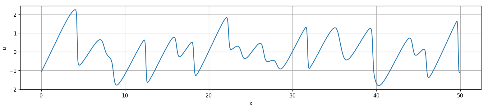
La condición inicial es ruido hasta 2 Hz. El espectro da así:
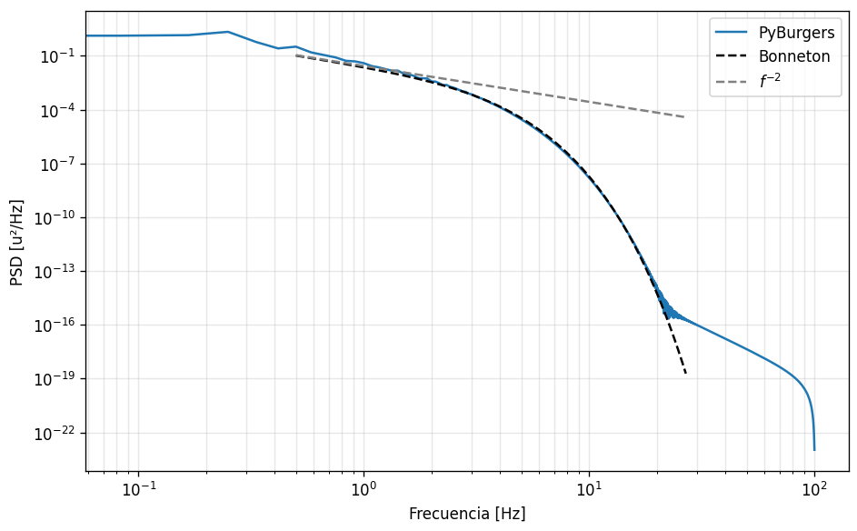
[11:03]
Y las funciones de estructura:
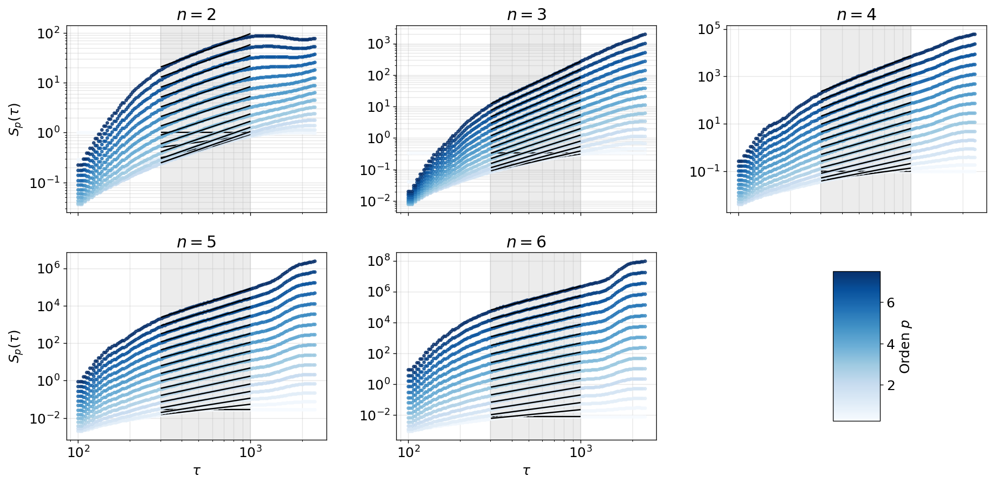
Y el scaling:
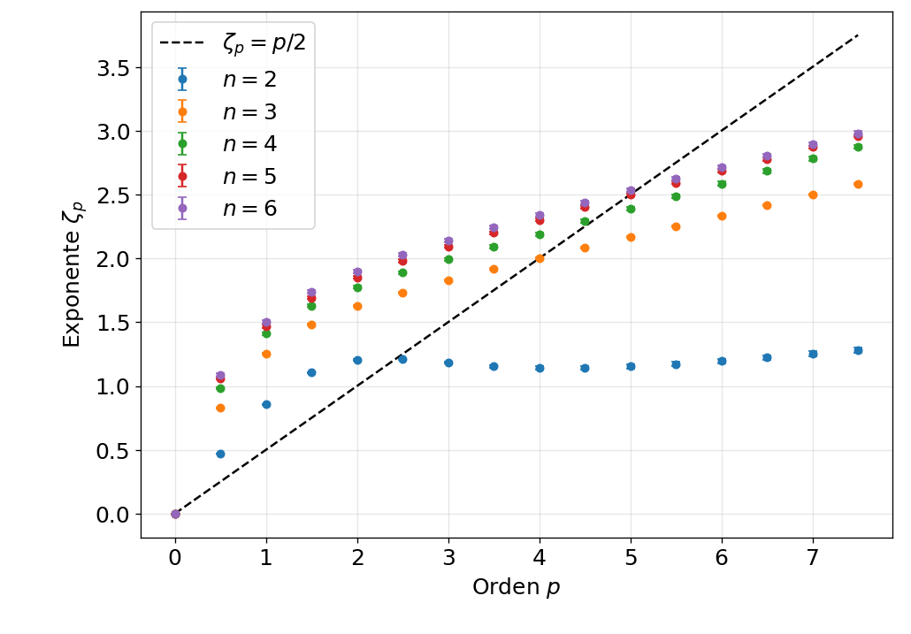
Vale destacar que estoy usando los mismos códigos que para las mediciones.
[11:04]
Algunos comentarios:
- Ṕara poder comparar con los experimentos habría que:
- Correr una simulación para un dominio espacial de \(T=500\) s y \(f_s=2000\) Hz.
- Encontrar el \(\nu\) de las mediciones para que \(\omega_\nu\) quede en el mismo lugar.
- Pensar porqué las colas apuntan en la otra dirección, que serían con velocidad negativa, especialmente por las funciones de estructura, ya que es una reflexión espacial en cualquier caso que cambia el signo de uno de los términos de Burgers.
- Para verificar que lo que estamos ajustando es de la forma d eBurgers se podría ajustar en escala logarítmica para darle más peso a las colas.
[11:53]
Acá está el ajuste que hacíamos antes para la evolución de un pulso Gaussiano, de parámetros: \(T=5\) s, \(f_s=200\) Hz, \(\nu=0.00510\) y amplitud \(A=1\) y dispersión \(\sigma=0.25\).
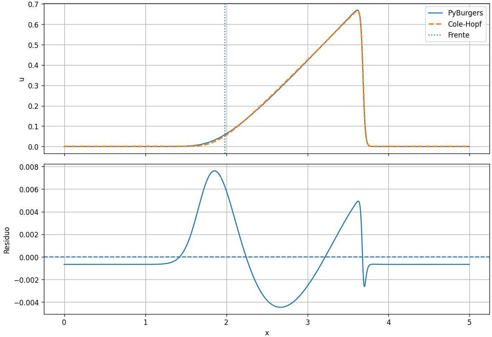
Acá tuve que cambiar la variable \(z\) para sacar la inversión del eje x que teníamos que poner para las mediciones (sería \(1-z\)).
[11:59]
Y los parámetros de ese ajuste es:
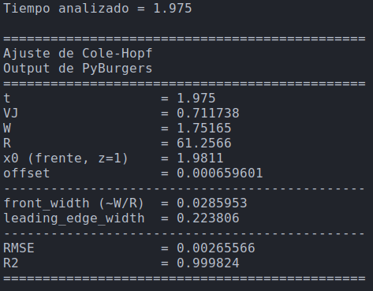
2026-09-16
[10:35]
Estoy estimando los parámetros que reporta Bonneton en su paper de (Bonneton 2023). Estos parámetros son:
| Parámetro | Definición | Forma de obtenerlo | Valor reportado |
| \(E(\omega)\) | Espectro físico de \(E=g\langle\eta²\rangle\). | Es \(E=g\frac{PSD}{2\pi}\) donde PSD se calcula con Welch. | |
| \(\tilde{E}\) | Energía total en el rango \([\omega_m,+\infty]\) | Integrando numéricamente el espectro \(E(\omega)\) calculado en ese rango. | |
| \(\omega_m\) | Es la frecuencia asociada al tiempo entre frentes \(T_m\). | \(\omega_m = \frac{2\pi}{T_m}\) | |
| \(\omega_\nu\) | Es la frecuencia que marca la escala difusiva | Ajustando el espectro adimensionalizado | [14.5,25.8] Hz |
| \(R_B\) | Burgers-like Reynolds number. | \(R_B=4\pi²\frac{\omega_\nu}{\omega_m}=\frac{3}{2}\frac{gH_cT_m}{\nu_c}\) | Entre 100 y 500 |
| \(\nu_c\) | Es la viscosidad de la Ecuación de Burgers | Usando el \(\tilde{E}=\frac{8}{9}\frac{\nu_c²}{g}\omega_m\omega_\nu(\text{coth}(\omega_m\omega_\nu)-1)\) hallado. |
Para estimar \(T_m\), o sea, ell tiempo entre choques Bonneton hace wave by wave analysis, yo hice algo parecido (creo) que es buscar los picos, ya que a priori, cada pico debería corresponderse con unn frente de onda de choque.
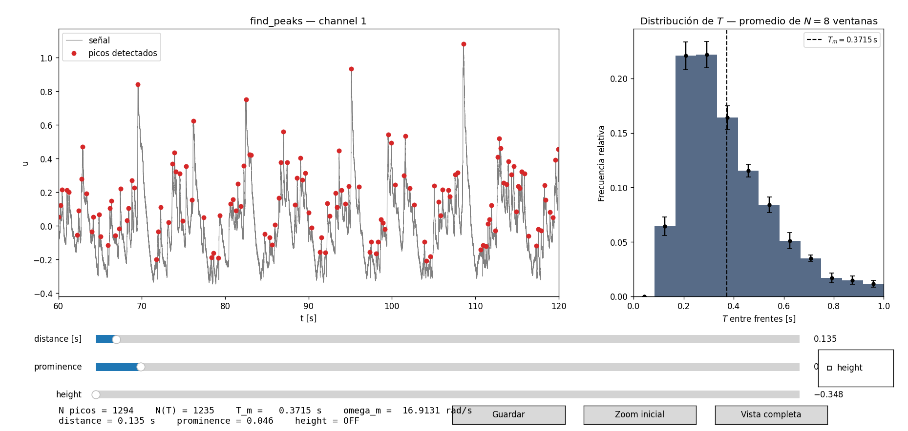
Para hallar \(\omega_\nu\) ajusté el espectro obtenido con Welch.
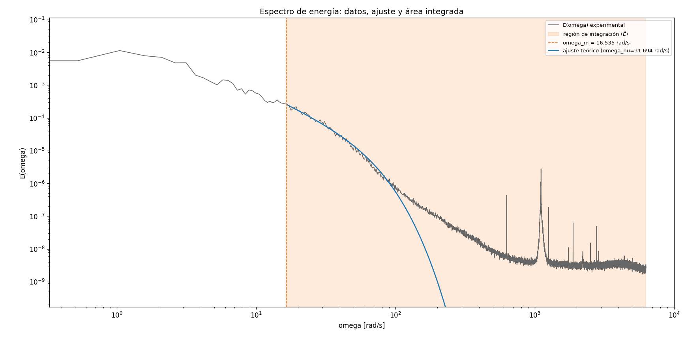
Los valores obtenidos son:
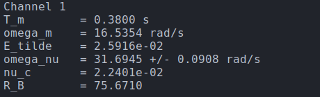
[11:19]
Hay algo que me genera duda, sobre si para calcular E debería usar \(E=g\langle\eta²\rangle\) o simplemente la altura sin el factor \(g\). Me inclino a pensar que debería ser la primera opción, pero si la uso me da \(\nu_c\sim10^{-2}\) y \(H_c\sim30\) cm, mientras que si uso la segunda me queda \(\nu_c\sim10^+-3}\) y queda \(H_c\sim9\) cm. En cualquier caso es muy alta de todas formas. Por ahí tiene que ver con la forma en que estimo el \(T_m\), que me está dando más chico de lo que es realmente, ya que solo una parte de todos los picos son ondas que rompen.
[11:30]
Esto último tendría sentido con el hecho de que en el espectro la zona que va como \(f^{-2}\) se extiende hasta frecuencias más bajas. Puedo ajustar la prominencia para solo agarrar picos más importantes. Voy a probar eso ahora.
[11:44]
Subiendo la prominencia de 0.046 a 0.15 obtengo lo siguientes picos detectados:
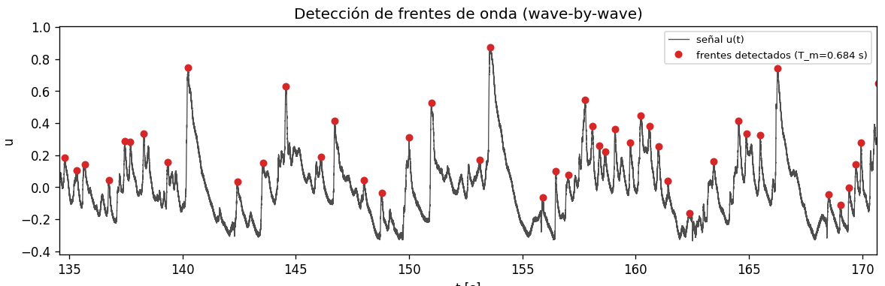
El ajuste sigue siendo parecido:
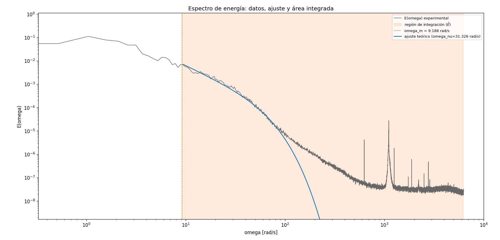
Y los parámetros obtenidos de todo el código:
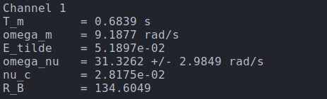
Con esto el \(R_B\) cae en el rango medido por Bonneton, el \(omega_\nu\) está también más cerca, y \(H_c=37\) cm es lo mismo.
En realida, ahora que lo pienso, para hacer el \(H_c\) más chico tendríamos que hacer \(T_m\) considerablemente más grande y bajar \(R_B\) o \(\nu_c\). Habrá que probar si es por el forzado raro esto, por ahí usando JONSWAP o algún otro espectro de ruido en el forzado estas cosas dan mejor.